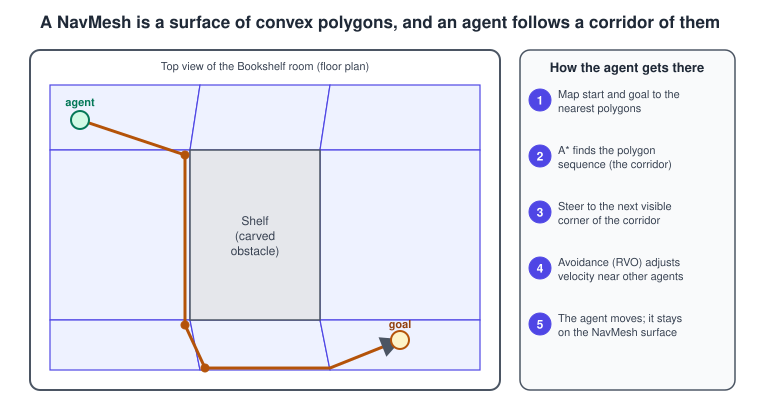
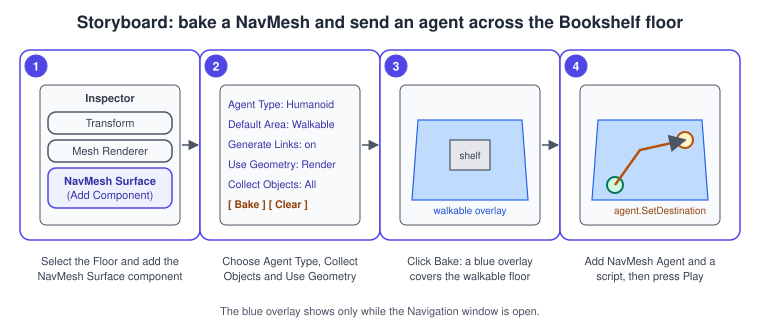

Navigation and AI
|
This content was generated with the assistance of AI and should be verified against the official documentation before being relied on in production. |
A character that walks to a place is solving two different problems. The first is global: which route through the level leads there, around the shelf and past the crates. The second is local: how to move along that route one frame at a time without walking into other characters. Unity solves both with its navigation system: a baked navigation mesh (NavMesh) answers the first question and a NavMesh Agent component answers the second. In the Bookshelf game "Shelve-it" this is how a small shelver robot finds books that have fallen on the floor and carries them back to the shelf.
The facts on this page were checked in November 2026. It documents Unity 6.3 LTS (6000.3) with the AI Navigation package 2.0 and the Behavior package 1.0, and mentions what 6.5 and 6.6 changed. The navigation components work on every platform that Unity supports, including the Web platform, and need no extra hardware. The scene is the Bookshelf room built in Getting Started: Hub and Editor, with the shared model bookshelf.glb imported as the shelf; the game loop that drives agents is the one described in Game Loop and Frame Timing.
What the navigation system is made of
Navigation in Unity 6 is split between the engine, which owns the pathfinding runtime and the NavMesh and NavMeshAgent scripting classes, and the AI Navigation package (com.unity.ai.navigation), which owns the components you add in the Editor. A new project from the URP 3D template already includes the package; if it is missing, install it from the Package Manager (see Asset Store and Packages).
| Component | Job | Typical use in the Bookshelf |
|---|---|---|
NavMesh Surface |
Defines and bakes the NavMesh for one agent type, from the geometry it collects |
One surface on the floor and shelf geometry |
NavMesh Agent |
Moves a character along a path and avoids other agents |
The shelver robot |
NavMesh Obstacle |
Makes a moving or removable object block agents, optionally carving a hole in the NavMesh |
A crate that the player can push |
NavMesh Link |
Connects two NavMeshes, or two places of one NavMesh, so agents can cross a gap |
A hop from the floor onto the lower shelf board |
NavMesh Modifier |
Changes how one GameObject takes part in the bake: area type, ignore, or link generation |
A rug that costs more to cross, a lamp that is ignored |
Source: AI Navigation package manual 2.0
How it works

The navigation system builds its own data from the scene geometry. An agent is modelled as a cylinder; the baker tests every place where such a cylinder can stand, joins those places into a surface and stores it as convex polygons. A convex polygon has no obstruction between any two of its points, so the pathfinder only has to know which polygons touch. To find a path it maps the start and the destination to their nearest polygons, searches the polygon graph with A* and obtains a sequence of polygons called a corridor. The agent then steers towards the next visible corner of the corridor. While it moves it uses reciprocal velocity obstacles (RVO) to bend its velocity away from other agents and from the edges of the mesh.
This split explains most behaviours that surprise newcomers: the path is computed against baked data and does not see a physics object that was not baked or carved; the agent moves its own transform and does not use a Rigidbody; and local avoidance can disagree with the corridor for a moment, which is why agents sometimes step off the straight line.
Baking a NavMesh with the NavMesh Surface
A NavMesh Surface is a component that you attach to any GameObject. It builds and stores a NavMesh for one agent type. A scene can contain several surfaces, for instance one for humanoids and one for a small robot with a different radius. Only enabled surfaces on active GameObjects load their data into the navigation system, so disabling a surface unloads its NavMesh, a convenient way to switch levels of a large scene.
Procedure: bake the Bookshelf floor

-
Select the floor of the Bookshelf room in the Hierarchy. If the shelf, books and floor are separate objects, select their common parent so that the surface collects them all.
-
In the Inspector, click Add Component and choose Navigation > NavMesh Surface.
-
Choose the Agent Type (the default is Humanoid), the Default Area (Walkable), Use Geometry (Render Meshes or Physics Colliders) and Collect Objects (All Game Objects, Volume, Current Object Hierarchy or NavMesh Modifier Component Only).
-
Click Bake. The result is stored in a NavMesh data asset, referenced by the NavMesh Data field, and the walkable area appears as a blue overlay whenever the Navigation window (Window > AI > Navigation) is open and visible.
-
Add a NavMesh Agent (see below) to a character and press Play.
Bake again whenever the geometry, the modifiers, the surface settings or the agent type settings change. To remove a NavMesh permanently, use the Clear button of the surface, or delete the data asset; removing only the component leaves the asset in the project.
The NavMesh Surface settings
| Property | What it does |
|---|---|
Agent Type |
The kind of agent that can use this NavMesh. Agent types are defined in the Navigation window, Agents tab. |
Default Area |
The area type given to the generated mesh: Walkable, Not Walkable or Jump built in, plus up to 29 custom areas, each with a traversal cost. |
Generate Links |
Lets the bake create links between collected objects, using the drop height and jump distance of the agent type. |
Use Geometry |
Render Meshes bakes from renderers and terrains; Physics Colliders bakes from colliders and terrains, so agents can get closer to the edge of the physical bounds. |
Collect Objects |
Which GameObjects take part: all active ones, those inside a volume, the surface’s own hierarchy, or only objects that have a NavMesh Modifier. |
Include Layers |
Which layers take part, in addition to the Collect Objects choice. |
NavMesh Data, Clear, Bake |
The stored data asset, the button that deletes it, and the button that builds it. |
The bake automatically excludes objects that carry a NavMesh Agent or a NavMesh Obstacle, because they are dynamic users of the NavMesh rather than part of the static surface.
Agent types and areas
The Agents tab of the Navigation window defines each agent type with a name, a radius (how close the centre may get to a wall or ledge), a height, a step height (the tallest step the agent can climb) and a maximum slope in degrees. For generated links it also defines the drop height and the jump distance. The Areas tab defines the area types and their cost. Cost is a multiplier on distance during pathfinding: a rug with cost 3 is walked across only when the detour is more than three times longer. An agent’s Area Mask lists the areas it is allowed to use, so a robot can be forbidden to enter the "Wet floor" area.
Baking at run time
A baked asset is the right choice for a level that does not change. When a level is built at run time, from a procedural generator or from user content, call BuildNavMesh on the surface after the geometry exists, and UpdateNavMesh to refresh only the regions whose objects changed.
using Unity.AI.Navigation;
using UnityEngine;
/// <summary>
/// Builds the NavMesh once the Bookshelf room has been generated, and rebuilds the
/// affected region when a shelf board is added or removed.
/// </summary>
[RequireComponent(typeof(NavMeshSurface))]
public class RuntimeNavMeshBuilder : MonoBehaviour
{
NavMeshSurface surface;
AsyncOperation pendingUpdate;
void Awake()
{
surface = GetComponent<NavMeshSurface>();
}
void Start()
{
// Synchronous build: fine at load time behind a loading screen.
surface.BuildNavMesh();
}
/// <summary>Call after moving or adding static geometry.</summary>
public void RefreshRegion()
{
// Only one update at a time; skip if the previous one is still running.
if (pendingUpdate != null && !pendingUpdate.isDone)
{
return;
}
pendingUpdate = surface.UpdateNavMesh(surface.navMeshData);
}
}The NavMesh Agent
A NavMesh Agent handles both pathfinding and movement. In its simplest use you set a destination and the agent does the rest. Add it with Add Component > Navigation > NavMesh Agent (the package also offers GameObject > AI menu entries for the surface, link and similar objects).
| Property | What it does |
|---|---|
Agent Type, Base Offset |
The type of NavMesh the agent uses, and the vertical offset of the collision cylinder against the transform pivot. |
Speed, Angular Speed, Acceleration |
Maximum speed in units per second, turning speed in degrees per second, and acceleration. |
Stopping Distance, Auto Braking |
How close to the destination the agent stops; whether it slows down on arrival. Turn Auto Braking off for a patrolling guard that moves smoothly between waypoints. |
Radius, Height |
The size used for avoidance and for passing under obstacles. |
Quality, Priority |
The avoidance quality, which you can lower when many agents are on screen, and the avoidance priority from 0 to 99, where a lower number wins. |
Auto Traverse OffMesh Link |
Whether the agent crosses links by itself; turn it off to animate the crossing in code. |
Auto Repath |
Whether the agent searches again when it reaches the end of a partial path. |
Area Mask |
Which area types the agent may walk on. |
Click to move with the Input System
The first behaviour almost every project needs is a click that sends an agent somewhere. The script reads the mouse through the Input System (the default in new Unity 6 projects, see Input System), casts a ray into the scene, snaps the hit to the nearest point of the NavMesh and sets the destination.
using UnityEngine;
using UnityEngine.AI;
using UnityEngine.InputSystem;
/// <summary>
/// Sends the attached NavMeshAgent to the point of the floor under the mouse cursor.
/// </summary>
[RequireComponent(typeof(NavMeshAgent))]
public class ClickToMove : MonoBehaviour
{
[SerializeField] Camera viewCamera;
[SerializeField] LayerMask groundMask = ~0;
[SerializeField, Min(0.1f)] float sampleRadius = 1f;
NavMeshAgent agent;
void Awake()
{
agent = GetComponent<NavMeshAgent>();
if (viewCamera == null)
{
viewCamera = Camera.main;
}
}
void Update()
{
Mouse mouse = Mouse.current;
if (mouse == null || !mouse.leftButton.wasPressedThisFrame)
{
return;
}
Ray ray = viewCamera.ScreenPointToRay(mouse.position.ReadValue());
if (!Physics.Raycast(ray, out RaycastHit hit, 200f, groundMask))
{
return;
}
// The hit may be on a shelf board or just outside the baked area: snap it to the NavMesh.
if (NavMesh.SamplePosition(hit.point, out NavMeshHit navHit, sampleRadius, NavMesh.AllAreas))
{
agent.SetDestination(navHit.position);
}
}
}SetDestination does not finish instantly: while the agent is still computing, pathPending is true and hasPath is false. Never test remainingDistance on the frame after the call without checking pathPending first, because remainingDistance is not valid yet. The next section shows the safe test.
Asking questions without moving
Sometimes the game needs to know whether a place is reachable, or how far it is, before it commits. NavMeshAgent.CalculatePath fills a NavMeshPath without moving the agent. Its status is PathComplete when the destination can be reached, PathPartial when the path ends at the nearest reachable point, and PathInvalid when there is no path.
using UnityEngine;
using UnityEngine.AI;
/// <summary>Small helpers around NavMeshAgent path queries.</summary>
public static class NavQueries
{
/// <summary>True, and the walking distance, when the target can be reached completely.</summary>
public static bool TryGetPathLength(NavMeshAgent agent, Vector3 target, out float length)
{
length = 0f;
var path = new NavMeshPath();
if (!agent.CalculatePath(target, path) || path.status != NavMeshPathStatus.PathComplete)
{
return false;
}
Vector3[] corners = path.corners;
for (int i = 1; i < corners.Length; i++)
{
length += Vector3.Distance(corners[i - 1], corners[i]);
}
return true;
}
/// <summary>True when the agent has arrived at the destination it was last given.</summary>
public static bool HasArrived(NavMeshAgent agent)
{
if (agent.pathPending)
{
return false;
}
if (agent.remainingDistance > agent.stoppingDistance)
{
return false;
}
return !agent.hasPath || agent.velocity.sqrMagnitude < 0.01f;
}
}A few more members of the agent are worth knowing: Warp teleports the agent onto the NavMesh without a path (use it instead of setting transform.position, which can leave the agent in an inconsistent state), ResetPath clears the current path, isStopped pauses and resumes movement, and desiredVelocity shows where avoidance wants to go, which is what an animation controller should read to drive a walk cycle (see Animation and Mecanim).
Source: NavMeshAgent.Warp
Obstacles, links and modifiers
NavMesh Obstacle: blocking moving things
A NavMesh Obstacle describes an object that agents must avoid but that is not part of the baked surface, such as a crate pushed by the player. It has two modes.
-
Obstructing (Carve off): the obstacle acts like a collider for avoidance. Agents try to steer around it and collide with it when close. The avoidance radius is short, so a room cluttered with such obstacles can trap an agent. Use this mode for things that move all the time, for example a vehicle or the player.
-
Carving (Carve on): when the obstacle is stationary it cuts a hole in the NavMesh, so the pathfinder plans routes around it or finds another route if a corridor is blocked. Use this mode for crates and barrels that sometimes move. Move Threshold sets how far it must move before the hole follows, Time To Stationary how long it must rest, and Carve Only Stationary (the default and usually the best for performance) removes the hole while the object moves and restores it after it stops.
Carving recalculates mesh data, so it costs CPU time. Carve only the objects that need it, and prefer Carve Only Stationary for physics-controlled objects.
NavMesh Link: crossing a gap
Two NavMesh areas that do not touch are not connected, even if they overlap in the Scene view. A NavMesh Link connects them. It has a start and an end, given either as points or as transforms, an optional width, a direction (bidirectional or one way), an area type and a cost override. Links produced by Generate Links during the bake use the Jump area type. Add one with GameObject > AI > NavMesh Link, or add the component to an existing object.
By default an agent crosses a link automatically in a straight line. To play a hop animation instead, clear Auto Traverse OffMesh Link and cross the link yourself while isOnOffMeshLink is true, then tell the agent that you are done.
using System.Collections;
using UnityEngine;
using UnityEngine.AI;
/// <summary>
/// Crosses NavMesh Links with a parabolic hop instead of the default straight slide.
/// </summary>
[RequireComponent(typeof(NavMeshAgent))]
public class HopAcrossLinks : MonoBehaviour
{
[SerializeField, Min(0.1f)] float hopHeight = 0.6f;
[SerializeField, Min(0.1f)] float hopSpeed = 3f;
NavMeshAgent agent;
bool hopping;
void Awake()
{
agent = GetComponent<NavMeshAgent>();
agent.autoTraverseOffMeshLink = false;
}
void Update()
{
if (agent.isOnOffMeshLink && !hopping)
{
StartCoroutine(Hop());
}
}
IEnumerator Hop()
{
hopping = true;
OffMeshLinkData link = agent.currentOffMeshLinkData;
Vector3 start = agent.transform.position;
Vector3 end = link.endPos + Vector3.up * agent.baseOffset;
float duration = Vector3.Distance(start, end) / hopSpeed;
for (float t = 0f; t < 1f; t += Time.deltaTime / duration)
{
Vector3 position = Vector3.Lerp(start, end, t);
position.y += hopHeight * 4f * t * (1f - t);
agent.transform.position = position;
yield return null;
}
agent.transform.position = end;
agent.CompleteOffMeshLink();
hopping = false;
}
}The older OffMeshLink component is deprecated in favour of NavMesh Link; the scripting members that traverse links on the agent keep their OffMeshLink names.
NavMesh Modifier: per-object control of the bake
A NavMesh Modifier changes how one GameObject, and optionally its children, takes part in the bake. Its Mode is either Add or Modify Object or Remove Object; Affected Agents chooses which agent types are affected; Override Area assigns another area type (the rug with a higher cost); Override Generate Links forces link generation on or off for the object. The modifier replaced the legacy Navigation Static flag, and unlike that flag it also works when you bake at run time.
Decisions: from a simple state machine to behavior graphs
Pathfinding answers "how do I get there"; it does not answer "where should I go and why". That is the job of the decision layer. The smallest useful decision layer is a finite state machine (FSM): a fixed set of states, exactly one active at a time, and rules for moving from one to another. The Bookshelf shelver has three states.
The following script implements it with an enum and a switch. The shelver finds books through a small registry rather than by searching the scene every frame, which is both cheaper and easier to test. This is the same State pattern discussed in Project Architecture and Design Patterns; for a handful of states an enum is enough, and you only move to state classes when each state grows its own data and transitions.
// FallenBook.cs
using System.Collections.Generic;
using UnityEngine;
/// <summary>Marks a book that lies on the floor and registers it for the shelver.</summary>
public class FallenBook : MonoBehaviour
{
static readonly List<FallenBook> all = new List<FallenBook>();
public static IReadOnlyList<FallenBook> All => all;
void OnEnable() => all.Add(this);
void OnDisable() => all.Remove(this);
// Static state survives when domain reload is off (the default for new projects since
// Unity 6.6), so clear it when the player starts.
[RuntimeInitializeOnLoadMethod(RuntimeInitializeLoadType.SubsystemRegistration)]
static void ResetStatics() => all.Clear();
}// ShelverAgent.cs
using UnityEngine;
using UnityEngine.AI;
/// <summary>
/// A robot that fetches fallen books and carries them to a slot on the shelf.
/// Three states: Idle, Fetch, Carry.
/// </summary>
[RequireComponent(typeof(NavMeshAgent))]
public class ShelverAgent : MonoBehaviour
{
enum State { Idle, Fetch, Carry }
[SerializeField] Transform shelfSlot;
[SerializeField, Min(0.1f)] float reachDistance = 0.7f;
[SerializeField, Min(0.1f)] float scanInterval = 0.5f;
NavMeshAgent agent;
State state = State.Idle;
FallenBook target;
float nextScan;
void Awake()
{
agent = GetComponent<NavMeshAgent>();
}
void Update()
{
switch (state)
{
case State.Idle:
UpdateIdle();
break;
case State.Fetch:
UpdateFetch();
break;
case State.Carry:
UpdateCarry();
break;
}
}
void Enter(State next)
{
state = next;
switch (next)
{
case State.Idle:
agent.ResetPath();
target = null;
break;
case State.Fetch:
agent.SetDestination(target.transform.position);
break;
case State.Carry:
target.transform.SetParent(transform, worldPositionStays: true);
agent.SetDestination(shelfSlot.position);
break;
}
}
void UpdateIdle()
{
if (Time.time < nextScan)
{
return;
}
nextScan = Time.time + scanInterval;
target = Nearest();
if (target != null)
{
Enter(State.Fetch);
}
}
void UpdateFetch()
{
if (target == null || !target.isActiveAndEnabled)
{
Enter(State.Idle);
return;
}
// The book may have been kicked: follow it.
agent.SetDestination(target.transform.position);
if (Reached(target.transform.position))
{
Enter(State.Carry);
}
}
void UpdateCarry()
{
if (target == null)
{
Enter(State.Idle);
return;
}
if (Reached(shelfSlot.position))
{
target.transform.SetParent(shelfSlot, worldPositionStays: false);
target.transform.localPosition = Vector3.zero;
target.enabled = false; // no longer "fallen": removes it from the registry
Enter(State.Idle);
}
}
bool Reached(Vector3 point)
{
if (agent.pathPending)
{
return false;
}
Vector3 flat = point - transform.position;
flat.y = 0f;
return flat.magnitude <= reachDistance;
}
FallenBook Nearest()
{
FallenBook best = null;
float bestDistance = float.MaxValue;
foreach (FallenBook book in FallenBook.All)
{
float d = (book.transform.position - transform.position).sqrMagnitude;
if (d < bestDistance)
{
bestDistance = d;
best = book;
}
}
return best;
}
}The agent is scanned twice per second rather than every frame (scanInterval), a cheap way to keep a decision layer from costing more than the movement it directs.
Unity Behavior: behavior graphs
For larger sets of behaviours, Unity offers the Behavior package (com.unity.behavior, version 1.0 with Unity 6.3 LTS), a visual tool for authoring behaviours of non-player characters and gameplay logic. Unity calls its behavior trees behavior graphs, because branches can merge back, which a traditional tree does not allow. A graph reads from top to bottom and is built from plain-language nodes: actions, conditions, sequences, subgraphs and event nodes. Variables live on a Blackboard shared between nodes, graphs and scripts. You attach a Behavior Agent component to a GameObject to run a graph, can trigger graphs and send events from C#, and can write custom nodes whose lifecycle mirrors MonoBehaviour with OnStart, OnUpdate and OnEnd. In Play mode the Editor shows the active branch of the graph live, which makes debugging much easier than printing logs from an enum switch. The package is free to use.
A sensible rule of thumb for the Bookshelf: keep the three-state shelver as an FSM, and reach for Behavior when the robot also needs patrol routes, priorities (a book on fire beats a book on the floor), interruptions, or when designers who do not write C# must tune it. Behavior drives movement through the same NavMesh Agent described above, so nothing on this page is wasted when you switch.
Common mistakes
-
Moving a NavMesh Agent with its transform or a Rigidbody. The agent owns the movement. Use
Warpto teleport,Movefor animation-driven displacement, andisKinematicrigidbodies if physics must coexist. -
Forgetting to bake after changing the level. A stale NavMesh sends agents through walls that were just added. Bake again, or rebuild at run time.
-
Reading
remainingDistancewhilepathPendingis true. It is not valid until the path exists. -
Setting an unreachable destination. The agent walks to the nearest reachable point and stands there. Check
CalculatePathand its status first, or snap the target withSamplePosition. -
Overlapping NavMeshes to connect them. Two baked meshes that merely overlap are not connected; add a NavMesh Link.
-
Carving everything. Carving is for stationary blockers that sometimes move; for objects that move constantly, leave Carve off.
-
Agent radius that does not match the model. The baked mesh is built for the agent type’s radius; a character with a larger visual radius clips walls. Create a second agent type and a second surface rather than a compromise radius.
-
Using
Physics Collidersand expecting render geometry. With Use Geometry set to Physics Colliders, objects without colliders are invisible to the bake. -
Per-frame searching. Calling
FindAnyObjectByTypeorOverlapSphereevery frame for every agent costs more than the pathfinding. Use registries, triggers and scan intervals.
Performance notes
-
Path requests are asynchronous: after
SetDestinationthe agent reportspathPendinguntil the path is ready. Thousands of simultaneous requests delay results, so spread them over time. -
Avoidance cost grows with the number of nearby agents. Lower the agent’s Quality for crowd members, and use Priority so that important agents are not pushed around.
-
Obstacle carving rebuilds mesh data; limit the count of carving obstacles and use Carve Only Stationary.
-
A large surface bakes slowly. Split a big level into several surfaces, or use Volume collection around the part that changed and update only that region.
-
Since Unity 6.5 the
Unity.AI.Navigation.LowLevelnamespace allows navigation queries from worker threads and C# jobs, so a large number of path queries can run in parallel without blocking the main thread (see DOTS: ECS, Jobs and Burst for jobs). -
Measure with the Profiler before optimising (see Profiling and Optimization).
What changed recently
| Version | Date | Change |
|---|---|---|
Unity 2022 LTS onwards |
2022 |
The AI Navigation package provides the components (NavMesh Surface, NavMesh Modifier, NavMesh Link) that replace the Navigation window baking workflow and the Navigation Static flag. |
Unity 6.3 LTS |
December 2025 |
AI Navigation 2.0 and Behavior 1.0 ship in the released package list. |
Unity 6.5 |
2026 |
Navigation queries can run on worker threads through |
Older tutorials
Many tutorials written before the AI Navigation package tell you to mark floors as Navigation Static in the Inspector and to bake from the Navigation window. Those steps no longer apply: you add a NavMesh Surface component, use a NavMesh Modifier for per-object settings, and open the Navigation window only to define agent types and areas. Tutorials that add an OffMeshLink component should use NavMesh Link, and scripts that bake by calling NavMeshBuilder directly should call BuildNavMesh on a surface.
See also
-
Game Loop and Frame Timing: how Update, fixed steps and frame time shape agent movement.
-
Physics, Audio and Input Basics: the general ideas behind colliders and input.
-
3D Physics: raycasts and colliders used by the click-to-move script.
-
C# Scripting and the MonoBehaviour Lifecycle: Update, coroutines and statics with domain reload off.
-
Project Architecture and Design Patterns: the State pattern in more detail.
-
Animation and Mecanim: driving a walk cycle from the agent’s velocity.
-
Input System: reading the mouse and gamepad.
-
Unity AI and ML: machine-learned behaviours as an alternative to hand-written ones.